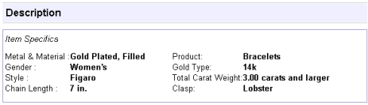
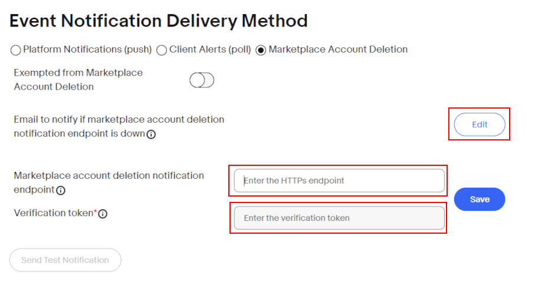
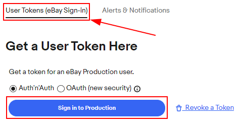

การตั้งค่าตัวเชื่อมต่ออีเบย์¶
ภาพรวม¶
ตัวเชื่อมต่อ eBay ของ Odoo ช่วยให้รายชื่อ eBay สามารถเชื่อมต่อกับผลิตภัณฑ์ Odoo ได้หลังจากเชื่อมต่อแล้ว: doc:` การอัปเดตสำหรับรายการ <linking_lists> สามารถผลิตบนโอดูหรืออีเบย์ ร่าง*ใบสั่งขายเมื่อสินค้าถูกขายบนอีเบย์*สร้างใน Odoo เพื่อให้ผู้ใช้สามารถดูและยืนยันได้ เมื่อสั่งซื้อขายแล้วได้รับการยืนยันแล้ว Odoo * สินค้าคงคลัง * และ * การขาย * คุณสมบัติแอปดึงมาตรฐานสินค้าในสต็อกและช่วยให้ผู้ใช้สามารถสร้างใบแจ้งหนี้ได้ตัวเชื่อมต่อ eBay ของ Odoo ช่วยให้รายการสินค้าใน eBay เชื่อมต่อกับผลิตภัณฑ์ Odoo ได้ เมื่อเชื่อมต่อแล้ว การอัปเดตรายการ สามารถทำได้ใน Odoo หรือใน eBay เมื่อขายสินค้าบน eBay ใบสั่งขาย แบบร่างจะถูกสร้างขึ้นใน Odoo เพื่อให้ผู้ใช้ตรวจสอบและยืนยัน เมื่อยืนยันใบสั่งขายแล้ว แอป Odoo สินค้าคงคลัง และ การขาย จะทำหน้าที่มาตรฐานในการดึงผลิตภัณฑ์ออกจากสินค้าคงคลัง และอนุญาตให้ผู้ใช้สร้างใบแจ้งหนี้ได้
See also
หากต้องการเรียนรู้เพิ่มเติมเกี่ยวกับตัวเชื่อมต่ออีเบย์โปรดไปที่หน้าต่อไปนี้:
:doc:` การจัดการ
：doc:
linking_listsการแก้ไขปัญหา
อีเบย์ - สนามลิงค์ ODoo¶
นี่คือรายละเอียดของผลิตภัณฑ์อีเบย์ ทุกสนามอีเบย์จะได้รับการปรับปรุงฟิลด์ที่สอดคล้องกันใน Odoo
ที่อยู่อีเบย์
สถานะอีเบย์
ปริมาณการขาย
วันที่เริ่มต้น
ชื่อเรื่อง
คำบรรยาย
เงื่อนไขโครงการ
หมวดหมู่
หมวดหมู่ 2
ประเภทร้านค้า
ร้านค้าประเภท 2
นโยบายการชำระเงิน
ประวัติผู้ขาย
รหัสไปรษณีย์
นโยบายการขนส่ง
ประเภทรายการ (ราคาคงที่หรือการประมูล)
ราคาเริ่มต้นการประมูล
ราคาซื้อตอนนี้
จำนวนราคาคงที่
ใช้ปริมาณสต็อก
จำนวนบนอีเบย์
ระยะเวลา
อนุญาตให้เสนอราคาที่ดีที่สุด
รายชื่อส่วนตัว
อีเบย์ Description
รูปภาพผลิตภัณฑ์ของ eBay
ประเทศ
ข้อกำหนด eBay¶
Variations group multiple products into one, with variation (or variant) options. Variations can sync to Odoo's attributes and values. Variations will appear in drop down menus near the top of the page when viewing an eBay listing. These are comparable to product variants in Odoo.

Item specifics, located at the bottom of the listing, detail product-specific information. These specifics don't sync with Odoo fields by default; a development is required to link these fields.
Sandbox and Production are terms that are used to categorize the eBay environments as either still in development/testing (Sandbox) or for use in the real instance of the database with real customer information/dataset (Production). It is recommended to start first in the Sandbox to test, and then following the processes below, create a Production instance.
Tip
สภาพแวดล้อม Sandbox ของอีเบย์สามารถเข้าถึงได้โดยไปที่ "Sandbox ของอีเบย์"พอร์ทัลไซต์ < https://sandbox.ebay.com/ >`_at` https://sandbox.ebay.com/ `. อีเบย์สภาพแวดล้อมการผลิตสามารถเข้าถึงได้โดยไปที่ "พอร์ทัล eBay.com"< https://www.ebay.com/ > `_ หรือ ` https://www.ebay.com/ `.
Important
ตัวเลือกด้านสิ่งแวดล้อม ** ต้อง ** ยังคงเหมือนเดิมสำหรับทุกสภาพแวดล้อมคุณสามารถตั้งค่าบน eBay และ Odoo ได้ตลอดการตั้งค่า
การดำเนินการอีเบย์ที่มีอยู่ใน Odoo¶
นี่คือการดำเนินการในตัวเพื่อเพิ่มหรืออัปเดตรายการอีเบย์ใน Odoo:
** รายการ ** / ** ลิงค์ **: สร้างรายการ eBay ใหม่ที่มีผลิตภัณฑ์ของ Odoo โดยฮิต: guilabel: "รายการสินค้าบนอีเบย์" หรือ: guilabel: "ลิงก์กับอีเบย์ที่มีอยู่"รายชื่อ
: guilabel: ปุ่มปรับเปลี่ยนรายการ: หลังจากเปลี่ยนรายการอีเบย์Odoo บันทึกและคลิกใน Odoo: guilabel: "แก้ไขรายการ"อัปเดตรายการอีเบย์
** Relist **: หากรายการสิ้นสุดก่อนกำหนดหรือ: guilabel:` รายการใหม่อัตโนมัติหากไม่ได้เลือก ผู้ใช้สามารถลิสต์รายการใหม่จากโอดูได้ วันที่เริ่มต้นจะรีเซ็ต
: guilabel: ปุ่มสิ้นสุดรายการสินค้า: สิ้นสุดรายการบนอีเบย์โดยตรงจากโอดอร์
** ยกเลิกการเชื่อมโยงรายการสินค้า **: ผู้ใช้สามารถยกเลิกการเชื่อมโยงผลิตภัณฑ์ไปยังอีเบย์รายชื่อ; สินค้าจะยังคงเหมือนเดิมบนอีเบย์
ต้องตั้งค่าบน Odoo ก่อนการตั้งค่าอีเบย์¶
หากต้องการเชื่อมโยงอีเบย์กับโอดู ให้ไปที่โอดูเพื่อติดตั้งโมดูลอีเบย์แผงควบคุม, แตะ: guilabel: "แอป" แอพลิเคชัน. ค้นหาคำว่า "eBay" และติดตั้งโมดูล "eBay Connector"
ก่อนที่จะตั้งค่าอีเบย์, รายการต่อไปนี้จะต้องกำหนดค่า:
ใน Odoo สร้างและกำหนดค่าผลิตภัณฑ์ที่คุณต้องการแสดงรายการในอีเบย์ อีเบย์จะไม่นำเข้าสินค้าใหม่มายังโอดู สินค้าทุกชิ้นต้องเป็นสินค้าก่อนสร้างใน Odoo แล้วเชื่อมโยงไปยังรายการ
Odoo ไม่อนุญาตให้เชื่อมโยงสินค้า eBay หลายรายการใน Odoo สำหรับแต่ละผลิตภัณฑ์หาก บริษัท ขายสินค้าเดียวกันในหลายรายการโปรดทำตามขั้นตอนด้านล่างคำอธิบาย:
ตั้งค่าผลิตภัณฑ์ * ฐาน * (ระบุไว้ในฟิลด์: guilabel:
component':abbr:`BoM (รายการวัสดุ)) รายการอีเบย์ทั้งหมดจะถูกดึงออกมาจาก ซึ่งจะเป็นสินค้าที่สามารถเก็บไว้ได้จึงสามารถเก็บสต๊อกได้ เน้นในด้านล่างเป็นสีเขียวและผลิตภัณฑ์จะรวมอยู่ในชุดติดตามผลแต่ละชุดต่อไปนี้เป็นผลิตภัณฑ์ "ลิงก์"Set 2+* Link * ผลิตภัณฑ์ (ระบุไว้ใน: guilabel: 'ผลิตภัณฑ์' ฟิลด์:abbr:
BoM (รายการวัสดุ), สินค้าแต่ละอีเบย์ตรงกับหนึ่ง ประเภทสินค้าจะถูกกำหนดโดยการตั้งค่าบัญชีของ บริษัท ตามที่ระบุไว้เอกสารโอดู ด้านล่างเน้นด้วยสีเหลืองทุกผลิตภัณฑ์ควรมีหนึ่ง: guilabel:BoM typeเท่ากับ: guilabel:Kitและมีฐานแท็กผลิตภัณฑ์: "ส่วนผสม" ของชุด เมื่อเชื่อมโยงกับผลิตภัณฑ์อีเบย์นี้หากขายไปแล้วใบสั่งจัดส่งที่สร้างขึ้นจะแสดงรายการสินค้าพื้นฐานแทนการเชื่อมโยงผลิตภัณฑ์ตั้งค่าผลิตภัณฑ์ ที่เชื่อมโยง 2 รายการขึ้นไป (ระบุไว้ในฟิลด์ ผลิตภัณฑ์ ของ BoM หนึ่งรายการสำหรับการลงประกาศใน eBay แต่ละรายการ ประเภทผลิตภัณฑ์จะถูกกำหนดโดยการตั้งค่าการบัญชีของบริษัท ตามที่อธิบายไว้ในเอกสารของ Odoo ไฮไลต์ด้วยสีเหลืองด้านล่าง แต่ละผลิตภัณฑ์ควรมี ประเภท BoM เท่ากับ ชุดผลิตภัณฑ์ และมีผลิตภัณฑ์พื้นฐานเป็น ส่วนประกอบ ของชุด เมื่อมีการขายผลิตภัณฑ์ eBay ที่เชื่อมโยงนี้ คำสั่งซื้อการจัดส่งที่สร้างขึ้นจะมีรายการผลิตภัณฑ์พื้นฐานแทนผลิตภัณฑ์ที่เชื่อมโยง

See also
：doc:`../.// สินค้าคงคลังและการผลิต / การตั้งค่าพื้นฐาน / การกำหนดค่าการเรียกเก็บเงิน / `
อีเบย์จะไม่สร้างใบแจ้งหนี้สำหรับคำสั่งซื้ออีเบย์ที่ผลักดันโดยอัตโนมัติเข้าไปในโอดอร์ การตั้งค่านโยบายการออกใบแจ้งหนี้สำหรับผลิตภัณฑ์ของอีเบย์: นโยบายการออกใบแจ้งหนี้จะกำหนดเมื่อสินค้าสามารถออกใบแจ้งหนี้ได้ เนื่องจากผู้ใช้อีเบย์ส่วนใหญ่เก็บชำระเงินก่อนส่งสินค้า "ใบแจ้งหนี้สั่งซื้อ" จะช่วยให้ผู้ใช้สร้างใบแจ้งหนี้จำนวนมากสำหรับการสั่งซื้อ eBay ทุกวันeBay จะไม่สร้างใบแจ้งหนี้โดยอัตโนมัติสำหรับคำสั่งซื้อของ eBay ที่ถูกเพิ่มเข้าไปใน Odoo กำหนดนโยบายการออกใบแจ้งหนี้สำหรับผลิตภัณฑ์ของ eBay: นโยบายการออกใบแจ้งหนี้จะกำหนดว่าสามารถออกใบแจ้งหนี้สำหรับผลิตภัณฑ์ได้เมื่อใด เนื่องจากผู้ใช้ eBay ส่วนใหญ่จะเรียกเก็บเงินก่อนจัดส่งสินค้า "ใบแจ้งหนี้เมื่อสั่งซื้อ" จะช่วยให้ผู้ใช้สามารถสร้างใบแจ้งหนี้สำหรับคำสั่งซื้อของ eBay ได้เป็นจำนวนมากทุกวัน
ตั้งค่าคลังสินค้าของ: guilabel: "ออกจากคลังสินค้า" เส้นทางเป็น: guilabel: "ส่งตรง (1 ขั้นตอน)"
Warning
เมื่อ: guilabel: "delivery" เส้นทางถูกตั้งค่าเป็นสองหรือสามขั้นตอนข้อผิดพลาดที่รู้จักกันดีปรากฏขึ้น: อีเบย์ทำเครื่องหมายการสั่งซื้อไม่ถูกต้องว่าได้จัดส่งแล้วเมื่อรับสินค้ายืนยันปฏิบัติการของโอโด้ คาดว่ามีพฤติกรรมติดป้ายคำสั่งให้** เมื่อยืนยันการสั่งซื้อ ** จัดส่งแล้ว ** ข้อผิดพลาดของป้ายนี้บล็อกการนำเข้าหมายเลขการติดตามใน eBay ในการจัดส่งใบสั่งเมื่อกำหนดเส้นทาง การจัดส่งขาออก เป็นสองหรือสามขั้นตอน จะเกิดจุดบกพร่องที่ทราบแล้ว: eBay ทำเครื่องหมายคำสั่งซื้อว่าจัดส่งแล้วอย่างไม่ถูกต้องเมื่อการดำเนินการเลือกสินค้าใน Odoo ได้รับการยืนยัน พฤติกรรมที่คาดหวังคือการทำเครื่องหมายคำสั่งซื้อว่าจัดส่งแล้ว หลังจาก ยืนยัน คำสั่งซื้อจัดส่ง แล้ว การติดฉลากที่ไม่ถูกต้องนี้ป้องกันไม่ให้มีการนำหมายเลขติดตามใน eBay เข้าสู่คำสั่งซื้อจัดส่ง
ฝึกลงทะเบียนชำระเงินหากติดตั้งแอปพลิเคชันบัญชี/ใบแจ้งหนี้รวมทั้งนำใบแจ้งหนี้ที่สร้างขึ้นจากคำสั่งซื้อของ eBay มาปรองดองกับเงินของ eBay ที่ได้รับ
See also
：doc:`.././// การเงิน / บัญชี / การธนาคาร / การสร้างความปรองดอง
สร้างโทเค็นการแจ้งเตือนการลบ/ปิดบัญชีตลาด ถึงเริ่มต้นนำทางไปที่: menusesection:` แอปพลิเคชันการขาย -> การกำหนดค่า ->ตั้งค่า ภายใต้: guilabel: "eBay" ชื่อเปลี่ยนโหมดเป็น:guilabel:
production' และเพื่อป้อนค่าข้อความแบบสุ่ม: guilabel: "คีย์ใบรับรองการผลิต" แล้วคลิก: guilabel:`สร้างโทเค็น`ภายใต้ปุ่ม: guilabel: `eBay Mall บัญชีลบ / ปิดการแจ้งเตือน" ส่วน โทเค็นนี้จะถูกใช้ในระหว่างการตั้งค่าอีเบย์ลบ / ปิดการกำหนดค่าการแจ้งเตือนสร้างโทเค็นการแจ้งเตือนการลบ/ปิดบัญชีตลาด ในการเริ่มต้น ให้ไปที่ :menuselection:`แอปการขาย --> การกำหนดค่า --> การตั้งค่าใต้ส่วนหัว eBay ให้เปลี่ยนโหมดเป็น ใช้งานจริง และป้อนค่าข้อความแบบสุ่มสำหรับ รหัสรับรองการใช้งานจริง จากนั้นคลิกปุ่ม สร้างโทเค็น ใต้ส่วน การแจ้งเตือนการลบ/ปิดบัญชี eBay Marketplace โทเค็นนี้จะถูกใช้ระหว่างการตั้งค่าบน eBay สำหรับการกำหนดค่าการแจ้งเตือนการลบ/ปิด

การตั้งค่าบนอีเบย์¶
การตั้งค่าบัญชีนักพัฒนา eBay¶
ขั้นแรกให้สร้างบัญชีนักพัฒนาอีเบย์ผ่าน "พอร์ทัลนักพัฒนาของอีเบย์"< https://go.developer.ebay.com/ >`_. เว็บไซต์นี้ต้องใช้ชื่อเข้าสู่ระบบที่แตกต่างกันรหัสผ่านสูงกว่าบัญชี eBay แม้ว่าจะสามารถใช้ที่อยู่อีเมลเดียวกันได้ลงทะเบียน การตรวจสอบสำหรับการสร้างบัญชีนักพัฒนาประมาณ 24ชั่วโมง
ตั้งค่าคีย์อีเบย์¶
หลังจากสร้างบัญชีนักพัฒนา eBay แล้วตั้งค่าแอปบน "eBay"พอร์ทัลนักพัฒนา < https://go.developer.ebay.com/ >`_. ถัดไปนำทางไปยัง:guilabel:Hi [username]`อยู่ที่มุมขวาบนของหน้าจอจากนั้นไปที่ตัวเลือกเมนูแบบเลื่อนลงคลิก: guilabel: `ชุดคีย์แอ็พพลิเคชัน ' การทำเช่นนี้เปิดหน้าต่างป๊อปอัพและแจ้งให้ผู้ใช้: guilabel: ป้อนชื่อแอปพลิเคชัน(สูงสุดห้าสิบตัวอักษร) และเลือกสภาพแวดล้อมการพัฒนา(:guilabel: "แซนด์บ็อกซ์" หรือ: guilabel: "การผลิต") การสร้างฟิลด์ทั้งสองนี้ชุดกุญแจแรก ชื่อของโปรแกรมนี้จะไม่ถูกบันทึกจนกว่าชุดกุญแจจะถูกบันทึกสร้าง คลิกที่: guilabel: "สร้างชุดคีย์" เพื่อสร้างชุดคีย์เมื่อสร้างบัญชีนักพัฒนา eBay แล้ว ให้ตั้งค่าแอปพลิเคชันบน พอร์ทัลนักพัฒนาของ eBay จากนั้น ไปที่ส่วนหัว สวัสดี [ชื่อผู้ใช้] ที่มุมขวาบนของหน้าจอ จากนั้นจากตัวเลือกเมนูแบบเลื่อนลง คลิก ชุดคีย์แอปพลิเคชัน การทำเช่นนี้จะเปิดป๊อปอัปที่แจ้งให้ผู้ใช้ ป้อนชื่อแอปพลิเคชัน (สูงสุดห้าสิบตัวอักษร) และเลือกสภาพแวดล้อมการพัฒนา (Sandbox หรือ การผลิต) สองฟิลด์นี้สร้างชุดคีย์ชุดแรก ชื่อแอปพลิเคชันนี้จะไม่ถูกบันทึกจนกว่าจะสร้างชุดคีย์ คลิกที่ สร้างชุดคีย์ เพื่อสร้างชุดคีย์
Warning
ชุดคีย์การผลิต * ที่สร้างขึ้นใหม่ถูกปิดใช้งานโดยค่าเริ่มต้น เปิดใช้งานได้โดยสมัครสมาชิก eBay Mall เพื่อลบหรือปิดบัญชีประกาศ" หรือขอผ่อนผันจากอีเบย์ เมื่อเปิดใช้งานแล้วด้วยชุดคีย์นี้ฐานข้อมูลสามารถโทรได้ 5,000 สายต่อวัน

กำหนดค่าการตั้งค่าการลบบัญชี / การแจ้งเตือน (การผลิต)¶
กำหนดค่าการแจ้งเตือนหรือการลบฐานข้อมูลในสภาพแวดล้อมการผลิตสภาพแวดล้อม, นำทางไปยัง "พอร์ทัลนักพัฒนาอีเบย์"< https://go.developer.ebay.com/ >`_. กำหนดค่าบัญชีการตั้งค่าการลบ / การแจ้งเตือนใน eBay โดยไปที่ "สวัสดี [ชื่อผู้ใช้]"ที่มุมขวาบนของหน้าจอตามด้วย: guilabel: "ชุดคีย์แอ็พพลิเคชัน"
ถัดไปคลิกที่: guilabel:` ลบตลาด / ปิดบัญชีใน: guilabel: "Production" ตัวเลือก "หมายเหตุ" ภายใต้ชุดคีย์ เข้าอีเมลภายใต้ guilabel: `หากบัญชีตลาดถูกลบโปรดส่งอีเมลแจ้งเตือนแจ้งว่า Endpoint ถูกปิด คลิกที่: guilabel: "บันทึก" เพื่อเปิดใช้งานอีเมล
หลังจากทำเช่นนี้ป้อน: guilabel:` ลบบัญชีห้างสรรพสินค้าแจ้ง URL จาก Endpoint`Odoo จุดสิ้นสุดของ HTTPs นี้อยู่ที่Odoo Navigation ไปที่: ส่วนเมนู: `แอปพลิเคชันการขาย -> การกำหนดค่า ->การตั้งค่าใน: guilabel: `eBay Marketplace บัญชี ลบ / ปิดฟิลด์ "การแจ้งเตือน"
คลิกที่ปุ่มด้านล่างฟิลด์นี้ใน Odoo: guilabel: "สร้างโทเค็น"สร้างโทเค็นการตรวจสอบความถูกต้องสำหรับสภาพแวดล้อมการผลิตอีเบย์ ในโอโด: guilabel: "คัดลอก" โทเค็นที่สร้างขึ้นใหม่และไปที่อีเบย์เพื่อกรอกข้อมูล: guilabel: ฟิลด์ "ตรวจสอบโทเค็น" คลิกที่: guilabel: "บันทึก" เพื่อเปิดใช้งาน:guilabel:` วิธีการส่งการแจ้งเตือนเหตุการณ์ `
หลังจากกรอกข้อมูลด้านบนคลิกที่: guilabel:` ส่งการแจ้งเตือนการทดสอบเพื่อทดสอบการแจ้งเตือนใหม่ เมื่อติ๊กสีเขียวให้ดำเนินการต่อไปเครื่องหมายปรากฏ หากโพสต์ทดสอบไม่เป็นไปตามข้อกำหนดโปรดไปที่การตั้งค่าข้างต้นอีกครั้งคาดว่า
เมื่อกำหนดค่าการตั้งค่าการแจ้งเตือนแล้วกลับมา: menusesection: หน้า "Application Key" สำหรับการสร้างชุดคีย์การผลิต
สร้างชุดกุญแจ¶
เมื่อตั้งค่าการแจ้งเตือนเรียบร้อยแล้วสามารถสร้างชุดคีย์การผลิตที่จำเป็นสำหรับส่วนที่เหลือของ Odooการกำหนดค่า กลับไปที่: ส่วน menuse: หน้า "Application Key"สร้างชุดคีย์การผลิต
System Prompt ผู้ดูแลระบบ: menusection:` ยืนยันหลักการติดต่อ ป้อนหรือยืนยันเจ้าของบัญชี (ผู้รับผิดชอบทางกฎหมายข้อตกลงใบอนุญาต eBay API) กรอกข้อมูล: guilabel: "ชื่อ",: guilabel: "นามสกุล": guilabel: "อีเมล": gilabel: `โทรศัพท์" จากนั้นเลือกคุณสามารถเลือก: guilabel: "ส่วนบุคคล" หรือ: guilabel: "ธุรกิจ" ตัวเลือก
Note
อีเมลแอดเดรสหรือหมายเลขโทรศัพท์ที่ให้ไว้ ** ไม่ ** ต้องแสดงด้วยบัญชี อีเบย์ใช้ข้อมูลนี้เพื่อติดต่อธุรกิจหรือในกรณีที่ User Token มีปัญหา ผู้ติดต่ออื่น ๆ สามารถเพิ่มจาก eBay: guilabel: หน้าโปรไฟล์และรายชื่อ
ฮิต: guilabel: "ดำเนินการต่อการสร้างคีย์" เพื่อยืนยันผู้ติดต่อหลัก: guilabel: "Application Key" จะเติมลงในหน้าจอใหม่และอีเมลจะยังส่งไปยังบัญชีผู้พัฒนา A: guilabel: App ID (ไคลเอ็นต์ไอดี),: guilabel: "developer ID" และ: guilabel: "certificate ID (คีย์ไคลเอ็นต์)" จะถูกเติม

คัดลอกค่าเหล่านี้ลงเนื่องจากพวกเขาจะป้อนลงใน Odoo ในกระบวนการในภายหลัง
สร้างโทเค็นผู้ใช้อีเบย์¶
ตอนนี้, สร้างโทเค็นผู้ใช้ * ในอีเบย์โดยไปที่ "สวัสดี [ชื่อผู้ใช้]"มุมขวาบนของหน้าจอตามด้วย: guilabel: "โทเค็นการเข้าถึงผู้ใช้"
เลือกสิ่งที่ถูกต้อง: guilabel:` สิ่งแวดล้อม': guilabel:` sandbox' เพื่อทดสอบหรือ: guilabel: "การผลิต" ของฐานข้อมูลสด ยังคงทางเลือกเดิมเหมาะสำหรับการตั้งค่าสภาพแวดล้อมทั้งหมดบน eBay และ Odoo
จากนั้นเลือกปุ่มตัวเลือกที่มีข้อความ: guilabel: 'Auth'n'Auth'
เลือก: guilabel:` เข้าสู่ระบบสภาพแวดล้อมการผลิต 'หรือ: guilabel:` เข้าสู่ระบบ Sandbox`รับโทเค็นผู้ใช้ในสภาพแวดล้อมที่เลือก ปุ่มนี้เป็นผลมาจากตัวเลือกข้างต้น: guilabel: "แซนด์บ็อกซ์" หรือ: guilabel: "การผลิต"
การทำเช่นนี้เรียกป๊อปอัพ: guilabel:` ยืนยันกฎหมายของคุณที่อยู่ กรอกข้อมูลที่จำเป็น, ตามลำดับ: guilabel:ชื่อ',: guilabel: "นามสกุล": guilabel: "อีเมลหลัก": gui: "ที่อยู่ตามกฎหมาย",และ: guilabel: "ประเภทบัญชี" สำหรับ: guilabel: "ประเภทบัญชี" โปรดเลือก: guilabel: "ส่วนบุคคล" หรือ: guilabel: "องค์กร". เพื่อให้เสร็จสมบูรณ์เมื่อยืนยันแล้วคลิก: guilabel: เข้าสู่ระบบอีเบย์เพื่อรับโทเค็น '
Note
หากมีปัญหาใด ๆ อีเบย์จะติดต่อบุคคลหรือธุรกิจนั้น ๆใช้คีย์แอปพลิเคชัน สามารถเพิ่มรายชื่อติดต่อเพิ่มเติมได้ที่: menusesection: "โปรไฟล์และที่ติดต่อ" หน้า eBay
ผู้ดูแลระบบจะถูกเปลี่ยนเส้นทางไปยังแซนด์บ็อกซ์หรือธงการผลิต -ในเพจของอีเบย์ การเข้าสู่ระบบนี้ไม่เหมือนกับ eBay Developer Consoleนี่คือบัญชีอีเบย์ที่ขายสินค้า อีเมลนี้และ / หรือลงชื่อเข้าใช้อาจแตกต่างจากบัญชีนักพัฒนาของ eBay
ป้อนบัญชีอีเบย์ของคุณ: guilabel: "อีเมล" หรือ: guilabel: "ชื่อผู้ใช้" แล้วลงชื่อเข้าใช้บัญชีอีเบย์
Important
หากการจำลอง Sandbox ต้องการผู้ใช้เพิ่มเติมผู้ใช้จะต้องทดสอบต้องการสร้าง เยี่ยมชม "eBay Sandbox Registry"< https://developer.ebay.com/sandbox/register >`_. คำอธิบายโดยละเอียดสามารถสามารถพบได้ในหน้าช่วยเหลือของอีเบย์: "สร้างผู้ใช้ Sandbox ทดสอบ< https://developer.ebay.com/api-docs/static/gs_create-a-test-sandbox-user.html>`_。
ให้สิทธิ์การเข้าถึงแอปพลิเคชัน¶
หลังจากเข้าสู่ระบบในการผลิตหรือสภาพแวดล้อมแซนด์บ็อกซ์อีเบย์จะแสดงผู้ดูแลระบบและ * ข้อตกลง * อนุญาตให้เข้าถึงข้อมูล eBay ของผู้ใช้
คลิกที่: guilabel: "ตกลง" อนุญาตให้ eBay ใช้บัญชี eBay กับ* อินเตอร์เฟซการเขียนโปรแกรมแอพพลิเคชั่น * (API) ข้อตกลงนี้สามารถเปลี่ยนแปลงได้ตามที่อยู่ด้านล่างเข้าถึงการตั้งค่าบัญชีของอีเบย์ได้ตลอดเวลา
Warning
อีเบย์มีลำดับเวลาระหว่างการเข้าสู่ระบบและการยอมรับข้อกำหนดไปยังบัญชี: ตัวย่อ: "API (Application Programming Interface)" ลิงก์เมื่อเสร็จสิ้น: guilabel: "user token" จะถูกกรอกลงใน: menusesection: หน้า "user token"
A: guilabel: "user token" จะถูกเติมลงในหน้าจอ โปรดตรวจสอบให้แน่ใจว่าได้คัดลอกเนื้อหานี้โทเค็นถูกปิดเพราะมันจะทำงานในขั้นตอนต่อไปกับ:guilabel:` ชุดคีย์แอ็พพลิเคชัน

Important
ต้องลงชื่อเข้าใช้บัญชี eBay เพื่อสร้างโทเค็น eBayนักพัฒนายังสามารถยกเลิกโทเค็นได้โดยคลิกที่: guilabel:`ลิงค์โทเค็น
แอป Explorer¶
ตอนนี้: guilabel: "ชุดคีย์แอ็พพลิเคชัน" และ: guilabel: "โทเค็นผู้ใช้" มีอยู่แล้วสร้างและสามารถทำการทดสอบผ่าน 'API Explorer'< https://developer.ebay.com/DevZone/build-test/test-tool/default.aspx >`_toตรวจสอบให้แน่ใจว่า: ตัวย่อ: "API (Application Programming Interface)"กำหนดค่าให้ถูกต้อง การทดสอบนี้จะใช้: ตัวย่อ: API(Application Programming Interface)
ในการเริ่มต้น: ตัวย่อ: API(Application Programming Interface)`การทดสอบโปรดคลิก:guilabel: รับ OAuth App Token` ซึ่งจะเติมคีย์ลงใน: guilabel: ฟิลด์ "Token"
ฟังก์ชันการค้นหาขั้นพื้นฐานจะดำเนินการ ฮิต: guilabel: ดำเนินการเสร็จสิ้นการทดสอบ การทดสอบที่ประสบความสำเร็จจะกลับมา: guilabel:` โทรตอบกลับ "200 OK" และสอดคล้องกับ: guilabel: "เวลา"
ป้อนบัตรกำนัลใน Odoo¶
คัดลอกก่อนหน้านี้: guilabel: "user token" และ: guilabel: "Application"ขณะนี้ชุดคีย์พร้อมที่จะป้อนฐานข้อมูล Odoo แล้ว
กลับไปที่การตั้งค่า eBay ใน Odoo (:menusesection:`แอพขาย -->กำหนดค่า -> การตั้งค่า -> eBay `) และวางข้อมูลประจำตัวต่อไปนี้ป้อนฟิลด์ที่เกี่ยวข้องใน Odoo จาก eBay
ชานชาลา |
รหัสการพัฒนา / ID |
Token |
ใช้คีย์ / ID |
รหัสใบรับรอง / ID |
|---|---|---|---|---|
อีเบย์ |
รหัสผู้พัฒนา |
โทเค็นผู้ใช้ |
รหัสแอปพลิเคชัน (Client ID) |
รหัสใบรับรอง (รหัสผ่านของลูกค้า) |
โอโด |
คีย์ผู้พัฒนา |
การผลิต / Sandbox Token |
การผลิต / คีย์แอป Sandbox |
รหัสใบรับรองการผลิต / Sandbox |
Important
: guilabel: "Application Key Set" สามารถทำได้โดยการเข้าถึง "eBay 'sพอร์ทัลนักพัฒนา < https://go.developer.ebay.com/ > _ จากนั้นไปที่ "สวัสดี"[ชื่อผู้ใช้] `ที่มุมขวาบนของหน้าจอและแตะ: guilabel: `Appชุดกุญแจ รับ * โทเค็นผู้ใช้ในอีเบย์โดยไปที่ "สวัสดี" *[username] `ที่มุมขวาบนของหน้าจอแล้ว: guilabel: `User Access Token' และฮิต: guilabel: "ลงชื่อเข้าใช้ Sandbox". : guilabel: "user token" ก็โอเคเข้าถึงได้โดยคลิกที่ลิงค์ต่อไปนี้: guilabel: "โทเค็นผู้ใช้": menusesection: หน้า "Application Key":guilabel:`ชุดคีย์แอปพลิเคชัน สามารถเข้าถึงได้โดยไปที่ พอร์ทัลนักพัฒนาของ eBay และไปที่ สวัสดี [ชื่อผู้ใช้] ที่มุมขวาบนของหน้าจอ จากนั้นคลิกที่ ชุดคีย์แอปพลิเคชัน ไปที่ โทเค็นผู้ใช้ ใน eBay โดยไปที่คำว่า สวัสดี [ชื่อผู้ใช้] ที่มุมขวาบนของหน้าจอ จากนั้นไปที่ โทเค็นการเข้าถึงของผู้ใช้ และคลิกที่ ลงชื่อเข้าใช้แซนด์บ็อกซ์ ` ยังสามารถเข้าถึง :guilabel:`โทเค็นผู้ใช้ ได้โดยคลิกที่ โทเค็นผู้ใช้ จากหน้า
ยืนยันการตั้งค่าที่ถูกต้องโดยการบันทึกข้อมูลประจำตัวใน Odoo ครั้งเดียวเมื่อการตั้งค่าเริ่มต้นเสร็จสิ้นแท็บเมนูใหม่ที่เรียกว่าจะปรากฏขึ้นในผลิตภัณฑ์`eBay สามารถเลือก: guilabel: "ขายบนอีเบย์" ดู: doc:`manage`เอกสารเกี่ยวกับการแสดงรายการผลิตภัณฑ์
Tip
ซิงค์หมวดหมู่สินค้าโดยคลิกที่ลิงค์ต่อไปนี้: guilabel: "หมวดหมู่สินค้า" หลังจากซิงค์เป็นรายการเมนูใหม่ที่เรียกว่า "หมวดหมู่อีเบย์" สำหรับผลิตภัณฑ์ต่อไปนี้การกำหนดค่า หมวดหมู่อีเบย์เหล่านี้นำเข้าจาก Odooฐานข้อมูลที่สามารถใช้ได้เมื่อมีการแสดงรายการสินค้าบน eBay ผ่าน Odoo
Important
หากต้องการหมวดหมู่ผลิตภัณฑ์นอกเหนือจากสี่เส้นทางผู้ใช้จะต้องเพิ่มเส้นทางเหล่านี้ด้วยตนเอง ในอดีตที่ผ่านมาทำได้โดยการหารายชื่อสำหรับสินค้าทุกประเภทนอกเหนือจากสี่เส้นทางนำเข้าด้วยตนเองโมเดลหมวดหมู่สินค้าใน Odoo แล้วเชื่อมโยงเป็นรายบุคคลไปยังสินค้า
See also
ตอนนี้การตั้งค่าเสร็จสมบูรณ์โปรดดำเนินการอย่างใดอย่างหนึ่งต่อไปนี้:
:doc:` สร้างรายการ <manage>`
: doc:` เชื่อมโยงรายการที่มีอยู่ <linking_lists>`